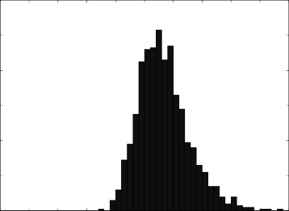
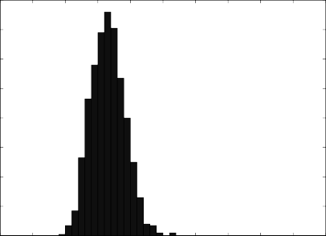

IL = maximum IR – actual IR (2.12)
To the extent that the information ratio is similar to the maxi- mum Sharpe ratio, the information ratio can be understood as the reward-to-risk ratio. If the information ratio is 0.5, this means that taking on 10% more risk will result in 5% extra return. On the flip side, the information loss shows the reduction in the reward-to-risk ratio. If the information loss is 0.1, then the portfolio manager is missing out on 1% of potential extra return for every 10% of risk he or she takes.
2.6 TENETS 5, 6, AND 7: STATISTICAL ISSUES IN QEPM
Tenets 5, 6, and 7 of QEPM concern issues arising from the appli- cation of statistical techniques to the portfolio-choice problem. In this section we discuss the three issues that a portfolio manager cannot neglect: data mining, parameter stability, and parameter uncertainty.
2.6.1 Data Mining
One of the biggest challenges for quantitative portfolio managers is to avoid the problem of data mining. Data mining violates tenet 5, which requires that quantitative models be based on sound eco- nomic theory. In some quantitative analyses, the use of data mining is quite obvious, but in other cases it is harder to detect.
Data mining is the practice of running regressions of historical stock returns on so many combinations of factors that one is virtu- ally guaranteed of finding a model or handful of factors that seem significantly correlated with stock returns but are in fact not par- ticularly meaningful. Suppose that there are 99 potential factors f1,…, f99 that may explain a stock’s return. Let f1t, …, f99t and rt be the
values of the factors and the stock’s return for month t. Suppose
that we observe the value of these factors and the stock’s return for 100 months, and then we regress the stock return on all 99 factors. That is, we estimate the following equation:
rt = + 1 f1t + … + 99 f99t + Et, t= 1, …, 100 (2.13)
What will we find out from the estimation? In this case, the goodness of fit (R2) of the regression will be 100%, because there will be no error in the regression (i.e., Et = 0). With this equation, we superficially “explain” the stock return completely.27 In truth, though, the R2 of 100% simply reflects the fact that we included too
many variables in the regression. From this regression, we cannot make any statistical inference about whether the model is valid or not. Even if we had made up the values of factors for the 100 months using a random-number generator, the regression still would have assigned coefficients so that R2 would equal exactly 100%. In fact, when there are 100 observations and more than 99 explanatory variables, the R2 always will be 100%. Basic statistics tells us not to include 99 variables when there are 100 observations.
Sometimes the problem is not so obvious. Suppose that we do a so-called stepwise regression. That is, we deliberately find the most significant variable out of 100 variables. Can we make statis- tical inferences from such a regression? No. Imagine again that we made up the value of factors using a random-number generator. If

27 We have 100 unknown parameters and 100 observations. Thus 100 unknown parameters are determined from a system of 100 equations. As long as the 100 equations are not linearly dependent, there will be a unique solution, and Et will not have any role.
we deliberately look for the most significant of the 100 variables, we are guaranteed to get a significant variable because we have such a large pool of variables from which to choose. We set up the regression so that it would generate a significant variable, knowing in advance that whatever variable we eventually selected would be significant. The statistical significance of the variable is therefore no real indication that the variable explains stock returns well.
To illustrate the concept, Fig. 2.1 shows the frequency distrib- ution of the absolute value of t statistics when we deliberately choose the most significant variable out of 100 randomly generat- ed variables. For each simulation, 100 observations of the depen- dent variable and 100 explanatory variables were generated from the standard normal distribution independently. Given 100 explanatory variables, we selected the most significant explanato- ry variable by running regressions of the dependent variable on the selected explanatory variable and a constant. The simulation was repeated 1000 times.
F I G U R E 2 . 1

Frequency distribution of the absolute values of t statistics from 1000 simulations.

120
100
80
60
40
20
0 0 0.5 1 1.5 2 2.5 3 3.5 4 4.5 5
As can be seen from the figure, in most cases the absolute value of the t statistic is greater than 2. The standard interpretation of this high t statistic is that the selected variable is significant. But we know from the design of the simulation that the selected explanatory variable does not have anything to do with the depen- dent variable. The R2 of the regression will be high simply because the t statistic is high, so the R2 also will be meaningless. For each simulation just described, we selected the 10 most significant explanatory variables and ran a regression of the dependent vari- able on the selected variables and a constant. The frequency distri- bution of the resulting R2 is plotted in Fig. 2.2. R2 is mostly around 30% and 40%, quite high values, but again, the high R2 does not suggest true statistical significance. The outcomes of stepwise regressions are, in a sense, rigged, and this is not the kind of research a portfolio manager ought to perform.
Even avoiding stepwise regression in one’s own analysis, sta-
tistical conclusions still may be tainted indirectly by data mining.
F I G U R E 2 . 2

Frequency distribution of R 2 from 1000 simulations.

160
140
120
100
80
60
40
20
0 0 0.1 0.2 0.3 0.4 0.5 0.6 0.7 0.8 0.9 1
Even when an individual researcher does not select variables delib- erately, the community of researchers may be doing a stepwise regression collectively. For example, in the 1970s, an MBA student in the business school of the University of Chicago found that the size (i.e., market capitalization) of a stock explained its return. Let’s say that the student came to this conclusion through valid statistical methods. We know, however, that there must have been thousands of other MBA students (not to mention hundreds of aca- demics and practitioners) who have tried to explain stock returns with other variables. The fact that one student’s conclusion about stock size gained widespread acceptance, whereas the conclusions of other studies did not, suggests that the community of financial researchers as a whole probably has been engaging in a kind of collective data mining referred to as data snooping. One therefore cannot accept in full faith the finding that the size of the stock is a significant explanatory variable.
We cannot completely avoid data mining or data snooping
when we test a factor unless we use data that have never before been used to test that particular factor. When we test a factor with the same data that many other people have already used to test it, our conclusions may be influenced by their conclusions. For instance, authors of numerous investment textbooks have written about tests that they and others performed using U.S. stock data from the S&P Compustat database. In fact, many of these tests ana- lyzed the same factors with the same stock data over the same time period. The P/E ratio in particular was one of the factors studied quite extensively. Thus, when we read in some textbooks that the P/E ratio explains stock returns well, we know, even before actu- ally running any of our own regressions, that the P/E ratio will be a good explanatory variable for much of the available data on U.S. stock returns. We cannot make any statistical inference from our own regression of returns on the P/E ratio unless we use data that have not already been extensively tested.
These problems suggest that careful empirical study is not
enough to avoid the data-mining problem. The best way to gener- ate meaningful statistics is to follow tenet 5 and make sure that the model is based on sound economic theory and common sense. Empirical evidence alone is not a sufficient basis for good practical decisions. A model will work only if there is a good reason to think that its factors explain stock returns and that the relationship
between those factors and stock prices has not been exploited already by other investors.
2.6.2 Parameter Stability
To make forecasts based on past data, we have to assume that his- tory repeats itself. If the historical average of the stock return is around 1%, then we may assume that the stock return will be around 1% next month. If the standard deviation of the stock return is historically around 10%, then we may expect it to be around 10% next month.
Unfortunately, the constant flux of the market often interrupts the historical patterns that we might count on continuing. CEOs, employees, products, market conditions, and regulations change. As companies change, the properties of stocks also change. When the properties of stocks change, the parameters of stock-return models change. Thus, if we estimate from the CAPM for, say, General Electric, then we have to ask ourselves, “Is the of General Electric going to be the same next month? Next quarter? Next year?” If we estimate a more complicated model, we have to determine whether the estimation will be stable over time.
Consideration of parameter stability plays an important role in determining data sample size. For example, if we believe that
is generally not constant for more than five years, we should not estimate it from a sample that includes data covering more than five years. Or knowing that Daimler and Chrysler merged, we should not create a sample that includes both premerger data and postmerger data. Understanding parameter stability is crucial to QEPM. In Chapter 16 we will discuss some simple ways to ensure parameter stability.
2.6.3 Parameter Uncertainty
Having extra information never hurts and is often helpful. However, extra information should not necessarily alter the portfo- lio composition. A portfolio manager may be able to construct a portfolio that is expected to outperform the benchmark. Does this mean that he or she should automatically choose the active portfo- lio instead of an indexed one? No. The active portfolio may have too much risk compared with the gain in expected return. Whether the
risk is “too much” depends on an individual portfolio manager’s attitude, but the amount of risk can be checked in principle.